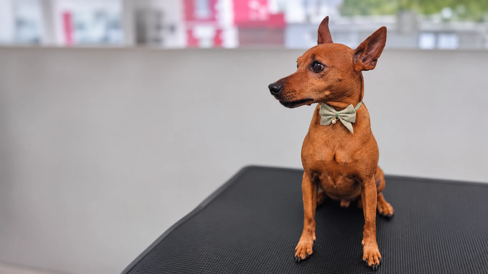
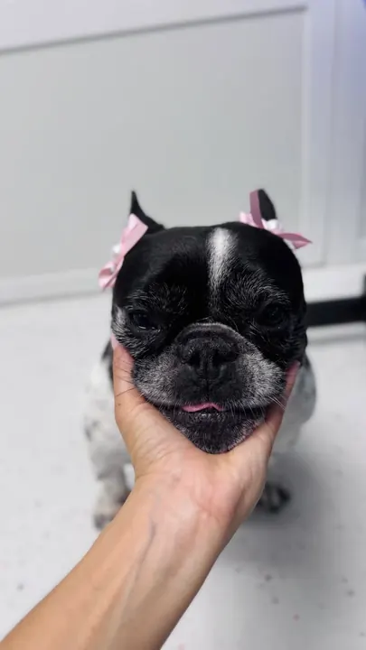
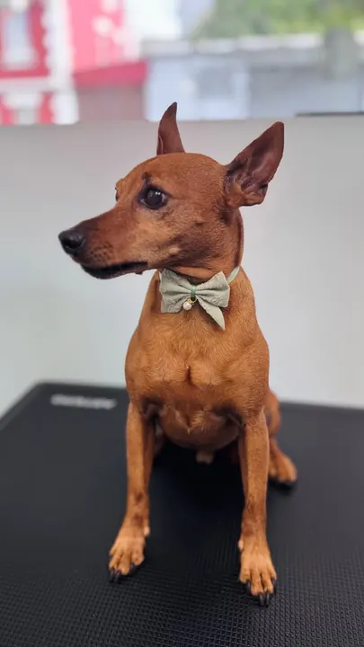
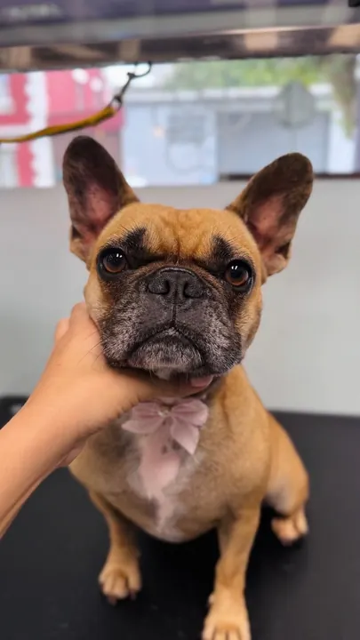

Corte prudente
Adaptado á lonxitude e á parte sensible.

Tamén coidamos o que non se ve a primeira vista. Un pequeno xesto de hixiene que merece toda a nosa atención.
Revisamos a lonxitude das unllas e realizamos un corte prudente, tendo en conta a zona sensible de cada unha. A cantidade que se pode recortar cambia dun can a outro.
Se lle custa deixarse tocar as patas, traballamos con paciencia e pausas. Unhas unllas moi longas poden requirir un mantemento progresivo. Ante dor, lesión ou unha unlla danada, recomendamos consultar co veterinario.
Adaptado á lonxitude e á parte sensible.
Revisión das unllas, incluídos os esporóns.
Pausas e manexo amable se o precisa.

Cans cuxas unllas non se desgastan o suficiente coa súa actividade diaria. É especialmente útil revisar tamén os esporóns, que non apoian igual ao camiñar.


O seu ritmo é parte do coidado.Atención individual · Decisións contigo
Observamos lonxitude, estado e sensibilidade.
Miramos a lonxitude, os esporóns e o estado de cada unlla. Non todas permiten recortar o mesmo: a parte sensible e o desgaste habitual condicionan ata onde convén chegar.

Deixamos que se afaga ao contacto nas patas.
Tomamos un intre para coñecer como responde ao contacto nas patas. Se lle custa, a sesión pode necesitar pausas e obxectivos máis pequenos, sen forzar un resultado nunha soa visita.
Avanzamos con pequenos cortes prudentes.
Avanzamos con cortes prudentes e revisamos o resultado. Nas unllas escuras a parte sensible é menos visible; unhas unllas moi longas poden requirir un mantemento gradual para acurtalas de forma segura.

Orientámoste sobre cando volver revisar.
Comentamos cando volver revisar e como familiarizalo con que lle toquen as patas. Se hai dor, unha unlla rota ou unha lesión, corresponde consultar o veterinario.
Unha ollada a como tratamos os peludos máis sensibles: con calma e moito agarimo.
Preme para reproducir a escena completa aquí mesmo, con son e controis. Podes pausar, avanzar ou vela a pantalla completa.
Fotos de clientes de Pelucans. Preme para ampliar.


A sesión comeza antes de entrar no salón e continúa cos coidados da casa.
Coméntanos se algunha vez tivo unha mala experiencia coas uñas ou se evita que lle toquen as patas. Sabelo permite preparar un manexo máis gradual.
A lonxitude que pode recortarse depende de cada uña e da súa parte sensible. Nas uñas escuras avanzamos con especial prudencia. Unhas uñas moi longas poden requirir varias revisións, no canto dun único corte grande.
Observa o crecemento e acorda cando volver revisalas. Non esquezas os esporóns. Se hai dor, sangrado, rotura ou inflamación, a revisión debe facela o seu veterinario.
Si. Escríbenos para acordar unha cita específica e confirmar dispoñibilidade.
Tradúcense con especial prudencia porque a parte sensible resulta menos visible. Valoramos ata onde se pode recortar.
Non sempre se poden acurtar ata a lonxitude desexada nunha soa visita. Podemos propoñer un mantemento progresivo.
Cóntanos como é, que lle gusta e que precisa. Do resto encargámonos nós, con calma.